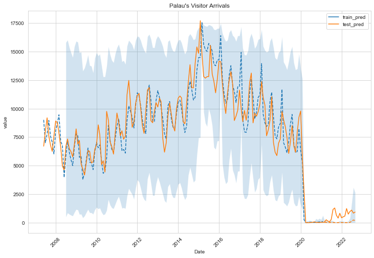

Palau#
import os
os.chdir("../")
import pickle
import numpy as np
import pandas as pd
import matplotlib.pyplot as plt
import seaborn as sns
sns.set_style("whitegrid")
from statsmodels.tsa.seasonal import seasonal_decompose, STL
from statsmodels.tsa.statespace.sarimax import SARIMAX
from statsmodels.tsa.arima.model import ARIMA
import pmdarima as pm
from pmdarima import model_selection
from pmdarima import auto_arima
from scripts.python.ts_utils import *
from scripts.python.tsmodel import *
from scripts.python.ts_eval import *
import warnings
warnings.filterwarnings('ignore')
palau_folder = os.getcwd() + "/data/tourism/palau/"
palau_va = (pd.read_csv(palau_folder + "model/palau_for_utsa.csv")
.drop("Unnamed: 0", axis=1))
palau_va.head(5)
| Date | JAPAN | SOUTH KOREA | TAIWAN | CHINA | USA/CANADA | EUROPE | OTHERS | Total | palau_travel | year | month | covid | |
|---|---|---|---|---|---|---|---|---|---|---|---|---|---|
| 0 | 2007-06-01 | 856.0 | 1291.0 | 3245.0 | 86.0 | 669.0 | 99.0 | 463.0 | 6709.0 | 0.320004 | 0.0 | 0.0 | 0.0 |
| 1 | 2007-07-01 | 2119.0 | 1366.0 | 3269.0 | 33.0 | 653.0 | 144.0 | 437.0 | 8021.0 | 0.952482 | 0.0 | 0.0 | 0.0 |
| 2 | 2007-08-01 | 3476.0 | 1354.0 | 3046.0 | 46.0 | 580.0 | 256.0 | 438.0 | 9196.0 | 0.453967 | 0.0 | 0.0 | 0.0 |
| 3 | 2007-09-01 | 3022.0 | 910.0 | 2497.0 | 61.0 | 559.0 | 145.0 | 401.0 | 7595.0 | 0.000000 | 0.0 | 0.0 | 0.0 |
| 4 | 2007-10-01 | 1807.0 | 1082.0 | 2298.0 | 49.0 | 774.0 | 390.0 | 395.0 | 6795.0 | 0.000000 | 0.0 | 0.0 | 0.0 |
Benchmark Methods#
naive_pred = naive_method(palau_va["Total"])
mean_pred = mean_method(palau_va["Total"])
snaive_pred = seasonal_naive_method(palau_va["Total"])
benchmark = pd.DataFrame()
for idx, method in enumerate([naive_pred, mean_pred, snaive_pred]):
metrics = calculate_evaluation(palau_va["Total"], method)
metrics_df = pd.DataFrame(metrics, index=[idx])
benchmark = pd.concat([benchmark, metrics_df], axis=0)
benchmark.index = ["naive", "mean", "seasonal naive"]
benchmark
| MSE | RMSE | MAE | MAPE | |
|---|---|---|---|---|
| naive | 2.096767e+06 | 1448.021907 | 1092.759563 | 323.392324 |
| mean | 1.639656e+07 | 4049.266859 | 3178.648757 | 8859.425305 |
| seasonal naive | 1.123704e+07 | 3352.169852 | 2405.935201 | 8120.993038 |
SARIMAX#
pw = SARIMAXPipeline(data=palau_va, y_var="Total",
exog_var=["covid", "palau_travel"], transform_method="scaledlogit")
pw.transform()
training size : 165, testing size : 19
pw.transformed_y.plot()
<AxesSubplot:>
help(pw.stepwise_search)
Help on method stepwise_search in module scripts.python.tsmodel:
stepwise_search(d: int = None, D: int = None) -> dict method of scripts.python.tsmodel.SARIMAXPipeline instance
Perform stepwise search for the best SARIMAX model.
Args:
d : the order of differencing
D : the order of seasonal differencing
Returns:
dict: Dictionary containing the parameters of the best model.
pw.stepwise_search()
Performing stepwise search to minimize aic
ARIMA(0,1,0)(0,0,1)[12] intercept : AIC=495.109, Time=0.05 sec
ARIMA(0,1,0)(0,0,0)[12] intercept : AIC=494.742, Time=0.01 sec
ARIMA(1,1,0)(1,0,0)[12] intercept : AIC=480.126, Time=0.08 sec
ARIMA(0,1,1)(0,0,1)[12] intercept : AIC=461.639, Time=0.12 sec
ARIMA(0,1,0)(0,0,0)[12] : AIC=492.765, Time=0.01 sec
ARIMA(0,1,1)(0,0,0)[12] intercept : AIC=463.008, Time=0.04 sec
ARIMA(0,1,1)(1,0,1)[12] intercept : AIC=inf, Time=0.25 sec
ARIMA(0,1,1)(0,0,2)[12] intercept : AIC=462.007, Time=0.44 sec
ARIMA(0,1,1)(1,0,0)[12] intercept : AIC=460.759, Time=0.10 sec
ARIMA(0,1,1)(2,0,0)[12] intercept : AIC=460.706, Time=0.31 sec
ARIMA(0,1,1)(2,0,1)[12] intercept : AIC=455.669, Time=0.56 sec
ARIMA(0,1,1)(2,0,2)[12] intercept : AIC=inf, Time=0.93 sec
ARIMA(0,1,1)(1,0,2)[12] intercept : AIC=455.863, Time=0.77 sec
ARIMA(0,1,0)(2,0,1)[12] intercept : AIC=inf, Time=0.54 sec
ARIMA(1,1,1)(2,0,1)[12] intercept : AIC=452.736, Time=0.63 sec
ARIMA(1,1,1)(1,0,1)[12] intercept : AIC=449.912, Time=0.30 sec
ARIMA(1,1,1)(0,0,1)[12] intercept : AIC=452.399, Time=0.18 sec
ARIMA(1,1,1)(1,0,0)[12] intercept : AIC=452.036, Time=0.15 sec
ARIMA(1,1,1)(1,0,2)[12] intercept : AIC=452.905, Time=0.90 sec
ARIMA(1,1,1)(0,0,0)[12] intercept : AIC=452.503, Time=0.07 sec
ARIMA(1,1,1)(0,0,2)[12] intercept : AIC=453.651, Time=0.76 sec
ARIMA(1,1,1)(2,0,0)[12] intercept : AIC=452.986, Time=0.49 sec
ARIMA(1,1,1)(2,0,2)[12] intercept : AIC=453.534, Time=1.03 sec
ARIMA(1,1,0)(1,0,1)[12] intercept : AIC=inf, Time=0.27 sec
ARIMA(2,1,1)(1,0,1)[12] intercept : AIC=452.160, Time=0.35 sec
ARIMA(1,1,2)(1,0,1)[12] intercept : AIC=451.835, Time=0.35 sec
ARIMA(0,1,0)(1,0,1)[12] intercept : AIC=inf, Time=0.29 sec
ARIMA(0,1,2)(1,0,1)[12] intercept : AIC=inf, Time=0.28 sec
ARIMA(2,1,0)(1,0,1)[12] intercept : AIC=inf, Time=0.32 sec
ARIMA(2,1,2)(1,0,1)[12] intercept : AIC=454.079, Time=0.36 sec
ARIMA(1,1,1)(1,0,1)[12] : AIC=inf, Time=0.27 sec
Best model: ARIMA(1,1,1)(1,0,1)[12] intercept
Total fit time: 11.221 seconds
SARIMAX Results
==========================================================================================
Dep. Variable: y No. Observations: 165
Model: SARIMAX(1, 1, 1)x(1, 0, 1, 12) Log Likelihood -216.956
Date: Thu, 13 Apr 2023 AIC 449.912
Time: 23:40:28 BIC 474.711
Sample: 0 HQIC 459.979
- 165
Covariance Type: opg
================================================================================
coef std err z P>|z| [0.025 0.975]
--------------------------------------------------------------------------------
intercept -0.0005 0.003 -0.156 0.876 -0.007 0.006
covid -0.1099 0.011 -10.303 0.000 -0.131 -0.089
palau_travel 0.3547 0.745 0.476 0.634 -1.105 1.814
ar.L1 0.3002 0.079 3.822 0.000 0.146 0.454
ma.L1 -0.8730 0.064 -13.697 0.000 -0.998 -0.748
ar.S.L12 0.8997 0.309 2.912 0.004 0.294 1.505
ma.S.L12 -0.8057 0.380 -2.119 0.034 -1.551 -0.060
sigma2 0.8110 0.038 21.134 0.000 0.736 0.886
===================================================================================
Ljung-Box (L1) (Q): 0.00 Jarque-Bera (JB): 17069.11
Prob(Q): 0.98 Prob(JB): 0.00
Heteroskedasticity (H): 6.77 Skew: 4.70
Prob(H) (two-sided): 0.00 Kurtosis: 52.09
===================================================================================
Warnings:
[1] Covariance matrix calculated using the outer product of gradients (complex-step).
{'maxiter': 50,
'method': 'lbfgs',
'order': (1, 1, 1),
'out_of_sample_size': 0,
'scoring': 'mse',
'scoring_args': {},
'seasonal_order': (1, 0, 1, 12),
'start_params': None,
'suppress_warnings': True,
'trend': None,
'with_intercept': True}
# Set parameter range
p, d, q = range(0, 3), range(0, 2), range(0, 3)
P, D, Q, s = range(0, 3), range(0, 2), range(0, 3), [12]
# list of all parameter combos
pdq = list(itertools.product(p, d, q))
seasonal_pdq = list(itertools.product(P, D, Q, s))
all_param = list(itertools.product(pdq, seasonal_pdq))
# Search the minimim aic
pw_msres = pw.manual_search(params=all_param)
Tried out SARIMAX(0, 0, 0)x(0, 0, 0, 12) - AIC:504.6
Tried out SARIMAX(0, 0, 0)x(0, 0, 1, 12) - AIC:494.47
Tried out SARIMAX(0, 0, 0)x(0, 0, 2, 12) - AIC:493.57
Tried out SARIMAX(0, 0, 0)x(0, 1, 0, 12) - AIC:511.9
Tried out SARIMAX(0, 0, 0)x(0, 1, 1, 12) - AIC:481.05
Tried out SARIMAX(0, 0, 0)x(0, 1, 2, 12) - AIC:481.04
Tried out SARIMAX(0, 0, 0)x(1, 0, 0, 12) - AIC:491.4
Tried out SARIMAX(0, 0, 0)x(1, 0, 1, 12) - AIC:491.79
Tried out SARIMAX(0, 0, 0)x(1, 0, 2, 12) - AIC:493.74
Tried out SARIMAX(0, 0, 0)x(1, 1, 0, 12) - AIC:492.37
Tried out SARIMAX(0, 0, 0)x(1, 1, 1, 12) - AIC:479.33
Tried out SARIMAX(0, 0, 0)x(1, 1, 2, 12) - AIC:480.44
Tried out SARIMAX(0, 0, 0)x(2, 0, 0, 12) - AIC:491.94
Tried out SARIMAX(0, 0, 0)x(2, 0, 1, 12) - AIC:493.75
Tried out SARIMAX(0, 0, 0)x(2, 0, 2, 12) - AIC:492.19
Tried out SARIMAX(0, 0, 0)x(2, 1, 0, 12) - AIC:486.38
Tried out SARIMAX(0, 0, 0)x(2, 1, 1, 12) - AIC:480.19
Tried out SARIMAX(0, 0, 0)x(2, 1, 2, 12) - AIC:480.76
Tried out SARIMAX(0, 0, 1)x(0, 0, 0, 12) - AIC:468.93
Tried out SARIMAX(0, 0, 1)x(0, 0, 1, 12) - AIC:464.86
Tried out SARIMAX(0, 0, 1)x(0, 0, 2, 12) - AIC:465.47
Tried out SARIMAX(0, 0, 1)x(0, 1, 0, 12) - AIC:498.0
Tried out SARIMAX(0, 0, 1)x(0, 1, 1, 12) - AIC:457.92
Tried out SARIMAX(0, 0, 1)x(0, 1, 2, 12) - AIC:457.35
Tried out SARIMAX(0, 0, 1)x(1, 0, 0, 12) - AIC:463.64
Tried out SARIMAX(0, 0, 1)x(1, 0, 1, 12) - AIC:464.19
Tried out SARIMAX(0, 0, 1)x(1, 0, 2, 12) - AIC:466.16
Tried out SARIMAX(0, 0, 1)x(1, 1, 0, 12) - AIC:474.26
Tried out SARIMAX(0, 0, 1)x(1, 1, 1, 12) - AIC:456.59
Tried out SARIMAX(0, 0, 1)x(1, 1, 2, 12) - AIC:460.5
Tried out SARIMAX(0, 0, 1)x(2, 0, 0, 12) - AIC:464.52
Tried out SARIMAX(0, 0, 1)x(2, 0, 1, 12) - AIC:466.17
Tried out SARIMAX(0, 0, 1)x(2, 0, 2, 12) - AIC:466.84
Tried out SARIMAX(0, 0, 1)x(2, 1, 0, 12) - AIC:465.88
Tried out SARIMAX(0, 0, 1)x(2, 1, 1, 12) - AIC:457.78
Tried out SARIMAX(0, 0, 1)x(2, 1, 2, 12) - AIC:459.72
Tried out SARIMAX(0, 0, 2)x(0, 0, 0, 12) - AIC:459.87
Tried out SARIMAX(0, 0, 2)x(0, 0, 1, 12) - AIC:457.53
Tried out SARIMAX(0, 0, 2)x(0, 0, 2, 12) - AIC:458.35
Tried out SARIMAX(0, 0, 2)x(0, 1, 0, 12) - AIC:494.11
Tried out SARIMAX(0, 0, 2)x(0, 1, 1, 12) - AIC:450.41
Tried out SARIMAX(0, 0, 2)x(0, 1, 2, 12) - AIC:449.84
Tried out SARIMAX(0, 0, 2)x(1, 0, 0, 12) - AIC:456.67
Tried out SARIMAX(0, 0, 2)x(1, 0, 1, 12) - AIC:457.11
Tried out SARIMAX(0, 0, 2)x(1, 0, 2, 12) - AIC:459.05
Tried out SARIMAX(0, 0, 2)x(1, 1, 0, 12) - AIC:469.0
Tried out SARIMAX(0, 0, 2)x(1, 1, 1, 12) - AIC:449.43
Tried out SARIMAX(0, 0, 2)x(1, 1, 2, 12) - AIC:450.71
Tried out SARIMAX(0, 0, 2)x(2, 0, 0, 12) - AIC:457.53
Tried out SARIMAX(0, 0, 2)x(2, 0, 1, 12) - AIC:459.07
Tried out SARIMAX(0, 0, 2)x(2, 0, 2, 12) - AIC:461.08
Tried out SARIMAX(0, 0, 2)x(2, 1, 0, 12) - AIC:460.14
Tried out SARIMAX(0, 0, 2)x(2, 1, 1, 12) - AIC:450.82
Tried out SARIMAX(0, 0, 2)x(2, 1, 2, 12) - AIC:453.03
Tried out SARIMAX(0, 1, 0)x(0, 0, 0, 12) - AIC:492.77
Tried out SARIMAX(0, 1, 0)x(0, 0, 1, 12) - AIC:493.14
Tried out SARIMAX(0, 1, 0)x(0, 0, 2, 12) - AIC:494.65
Tried out SARIMAX(0, 1, 0)x(0, 1, 0, 12) - AIC:541.14
Tried out SARIMAX(0, 1, 0)x(0, 1, 1, 12) - AIC:474.36
Tried out SARIMAX(0, 1, 0)x(0, 1, 2, 12) - AIC:476.32
Tried out SARIMAX(0, 1, 0)x(1, 0, 0, 12) - AIC:492.91
Tried out SARIMAX(0, 1, 0)x(1, 0, 1, 12) - AIC:490.57
Tried out SARIMAX(0, 1, 0)x(1, 0, 2, 12) - AIC:492.54
Tried out SARIMAX(0, 1, 0)x(1, 1, 0, 12) - AIC:510.09
Tried out SARIMAX(0, 1, 0)x(1, 1, 1, 12) - AIC:476.32
Tried out SARIMAX(0, 1, 0)x(1, 1, 2, 12) - AIC:478.3
Tried out SARIMAX(0, 1, 0)x(2, 0, 0, 12) - AIC:494.22
Tried out SARIMAX(0, 1, 0)x(2, 0, 1, 12) - AIC:492.55
Tried out SARIMAX(0, 1, 0)x(2, 0, 2, 12) - AIC:494.48
Tried out SARIMAX(0, 1, 0)x(2, 1, 0, 12) - AIC:497.07
Tried out SARIMAX(0, 1, 0)x(2, 1, 1, 12) - AIC:478.2
Tried out SARIMAX(0, 1, 0)x(2, 1, 2, 12) - AIC:480.29
Tried out SARIMAX(0, 1, 1)x(0, 0, 0, 12) - AIC:461.14
Tried out SARIMAX(0, 1, 1)x(0, 0, 1, 12) - AIC:459.82
Tried out SARIMAX(0, 1, 1)x(0, 0, 2, 12) - AIC:460.19
Tried out SARIMAX(0, 1, 1)x(0, 1, 0, 12) - AIC:492.92
Tried out SARIMAX(0, 1, 1)x(0, 1, 1, 12) - AIC:433.53
Tried out SARIMAX(0, 1, 1)x(0, 1, 2, 12) - AIC:435.49
Tried out SARIMAX(0, 1, 1)x(1, 0, 0, 12) - AIC:458.95
Tried out SARIMAX(0, 1, 1)x(1, 0, 1, 12) - AIC:451.25
Tried out SARIMAX(0, 1, 1)x(1, 0, 2, 12) - AIC:453.25
Tried out SARIMAX(0, 1, 1)x(1, 1, 0, 12) - AIC:464.89
Tried out SARIMAX(0, 1, 1)x(1, 1, 1, 12) - AIC:435.5
Tried out SARIMAX(0, 1, 1)x(1, 1, 2, 12) - AIC:436.28
Tried out SARIMAX(0, 1, 1)x(2, 0, 0, 12) - AIC:458.9
Tried out SARIMAX(0, 1, 1)x(2, 0, 1, 12) - AIC:453.24
Tried out SARIMAX(0, 1, 1)x(2, 0, 2, 12) - AIC:453.96
Tried out SARIMAX(0, 1, 1)x(2, 1, 0, 12) - AIC:454.38
Tried out SARIMAX(0, 1, 1)x(2, 1, 1, 12) - AIC:437.42
Tried out SARIMAX(0, 1, 1)x(2, 1, 2, 12) - AIC:438.21
Tried out SARIMAX(0, 1, 2)x(0, 0, 0, 12) - AIC:451.28
Tried out SARIMAX(0, 1, 2)x(0, 0, 1, 12) - AIC:451.53
Tried out SARIMAX(0, 1, 2)x(0, 0, 2, 12) - AIC:452.84
Tried out SARIMAX(0, 1, 2)x(0, 1, 0, 12) - AIC:494.24
Tried out SARIMAX(0, 1, 2)x(0, 1, 1, 12) - AIC:432.93
Tried out SARIMAX(0, 1, 2)x(0, 1, 2, 12) - AIC:434.91
Tried out SARIMAX(0, 1, 2)x(1, 0, 0, 12) - AIC:451.23
Tried out SARIMAX(0, 1, 2)x(1, 0, 1, 12) - AIC:447.64
Tried out SARIMAX(0, 1, 2)x(1, 0, 2, 12) - AIC:449.62
Tried out SARIMAX(0, 1, 2)x(1, 1, 0, 12) - AIC:465.17
Tried out SARIMAX(0, 1, 2)x(1, 1, 1, 12) - AIC:434.91
Tried out SARIMAX(0, 1, 2)x(1, 1, 2, 12) - AIC:435.89
Tried out SARIMAX(0, 1, 2)x(2, 0, 0, 12) - AIC:452.23
Tried out SARIMAX(0, 1, 2)x(2, 0, 1, 12) - AIC:449.67
Tried out SARIMAX(0, 1, 2)x(2, 0, 2, 12) - AIC:450.59
Tried out SARIMAX(0, 1, 2)x(2, 1, 0, 12) - AIC:453.42
Tried out SARIMAX(0, 1, 2)x(2, 1, 1, 12) - AIC:436.86
Tried out SARIMAX(0, 1, 2)x(2, 1, 2, 12) - AIC:437.87
Tried out SARIMAX(1, 0, 0)x(0, 0, 0, 12) - AIC:455.74
Tried out SARIMAX(1, 0, 0)x(0, 0, 1, 12) - AIC:453.73
Tried out SARIMAX(1, 0, 0)x(0, 0, 2, 12) - AIC:454.57
Tried out SARIMAX(1, 0, 0)x(0, 1, 0, 12) - AIC:491.74
Tried out SARIMAX(1, 0, 0)x(0, 1, 1, 12) - AIC:443.82
Tried out SARIMAX(1, 0, 0)x(0, 1, 2, 12) - AIC:444.25
Tried out SARIMAX(1, 0, 0)x(1, 0, 0, 12) - AIC:452.91
Tried out SARIMAX(1, 0, 0)x(1, 0, 1, 12) - AIC:453.03
Tried out SARIMAX(1, 0, 0)x(1, 0, 2, 12) - AIC:455.0
Tried out SARIMAX(1, 0, 0)x(1, 1, 0, 12) - AIC:465.7
Tried out SARIMAX(1, 0, 0)x(1, 1, 1, 12) - AIC:444.07
Tried out SARIMAX(1, 0, 0)x(1, 1, 2, 12) - AIC:446.92
Tried out SARIMAX(1, 0, 0)x(2, 0, 0, 12) - AIC:453.71
Tried out SARIMAX(1, 0, 0)x(2, 0, 1, 12) - AIC:455.01
Tried out SARIMAX(1, 0, 0)x(2, 0, 2, 12) - AIC:456.25
Tried out SARIMAX(1, 0, 0)x(2, 1, 0, 12) - AIC:456.2
Tried out SARIMAX(1, 0, 0)x(2, 1, 1, 12) - AIC:445.74
Tried out SARIMAX(1, 0, 0)x(2, 1, 2, 12) - AIC:447.74
Tried out SARIMAX(1, 0, 1)x(0, 0, 0, 12) - AIC:457.22
Tried out SARIMAX(1, 0, 1)x(0, 0, 1, 12) - AIC:454.94
Tried out SARIMAX(1, 0, 1)x(0, 0, 2, 12) - AIC:455.52
Tried out SARIMAX(1, 0, 1)x(0, 1, 0, 12) - AIC:488.17
Tried out SARIMAX(1, 0, 1)x(0, 1, 1, 12) - AIC:434.06
Tried out SARIMAX(1, 0, 1)x(0, 1, 2, 12) - AIC:435.97
Tried out SARIMAX(1, 0, 1)x(1, 0, 0, 12) - AIC:453.96
Tried out SARIMAX(1, 0, 1)x(1, 0, 1, 12) - AIC:452.34
Tried out SARIMAX(1, 0, 1)x(1, 0, 2, 12) - AIC:453.75
Tried out SARIMAX(1, 0, 1)x(1, 1, 0, 12) - AIC:461.56
Tried out SARIMAX(1, 0, 1)x(1, 1, 1, 12) - AIC:435.98
Tried out SARIMAX(1, 0, 1)x(1, 1, 2, 12) - AIC:436.89
Tried out SARIMAX(1, 0, 1)x(2, 0, 0, 12) - AIC:454.39
Tried out SARIMAX(1, 0, 1)x(2, 0, 1, 12) - AIC:453.81
Tried out SARIMAX(1, 0, 1)x(2, 0, 2, 12) - AIC:454.98
Tried out SARIMAX(1, 0, 1)x(2, 1, 0, 12) - AIC:452.39
Tried out SARIMAX(1, 0, 1)x(2, 1, 1, 12) - AIC:437.97
Tried out SARIMAX(1, 0, 1)x(2, 1, 2, 12) - AIC:438.73
Tried out SARIMAX(1, 0, 2)x(0, 0, 0, 12) - AIC:452.56
Tried out SARIMAX(1, 0, 2)x(0, 0, 1, 12) - AIC:452.33
Tried out SARIMAX(1, 0, 2)x(0, 0, 2, 12) - AIC:453.37
Tried out SARIMAX(1, 0, 2)x(0, 1, 0, 12) - AIC:490.16
Tried out SARIMAX(1, 0, 2)x(0, 1, 1, 12) - AIC:433.44
Tried out SARIMAX(1, 0, 2)x(0, 1, 2, 12) - AIC:435.43
Tried out SARIMAX(1, 0, 2)x(1, 0, 0, 12) - AIC:451.88
Tried out SARIMAX(1, 0, 2)x(1, 0, 1, 12) - AIC:449.36
Tried out SARIMAX(1, 0, 2)x(1, 0, 2, 12) - AIC:451.3
Tried out SARIMAX(1, 0, 2)x(1, 1, 0, 12) - AIC:463.1
Tried out SARIMAX(1, 0, 2)x(1, 1, 1, 12) - AIC:435.43
Tried out SARIMAX(1, 0, 2)x(1, 1, 2, 12) - AIC:436.39
Tried out SARIMAX(1, 0, 2)x(2, 0, 0, 12) - AIC:452.61
Tried out SARIMAX(1, 0, 2)x(2, 0, 1, 12) - AIC:451.43
Tried out SARIMAX(1, 0, 2)x(2, 0, 2, 12) - AIC:452.31
Tried out SARIMAX(1, 0, 2)x(2, 1, 0, 12) - AIC:453.0
Tried out SARIMAX(1, 0, 2)x(2, 1, 1, 12) - AIC:437.4
Tried out SARIMAX(1, 0, 2)x(2, 1, 2, 12) - AIC:438.3
Tried out SARIMAX(1, 1, 0)x(0, 0, 0, 12) - AIC:480.38
Tried out SARIMAX(1, 1, 0)x(0, 0, 1, 12) - AIC:479.01
Tried out SARIMAX(1, 1, 0)x(0, 0, 2, 12) - AIC:479.59
Tried out SARIMAX(1, 1, 0)x(0, 1, 0, 12) - AIC:510.98
Tried out SARIMAX(1, 1, 0)x(0, 1, 1, 12) - AIC:450.88
Tried out SARIMAX(1, 1, 0)x(0, 1, 2, 12) - AIC:452.8
Tried out SARIMAX(1, 1, 0)x(1, 0, 0, 12) - AIC:478.18
Tried out SARIMAX(1, 1, 0)x(1, 0, 1, 12) - AIC:470.6
Tried out SARIMAX(1, 1, 0)x(1, 0, 2, 12) - AIC:472.56
Tried out SARIMAX(1, 1, 0)x(1, 1, 0, 12) - AIC:483.16
Tried out SARIMAX(1, 1, 0)x(1, 1, 1, 12) - AIC:452.81
Tried out SARIMAX(1, 1, 0)x(1, 1, 2, 12) - AIC:454.5
Tried out SARIMAX(1, 1, 0)x(2, 0, 0, 12) - AIC:478.29
Tried out SARIMAX(1, 1, 0)x(2, 0, 1, 12) - AIC:472.57
Tried out SARIMAX(1, 1, 0)x(2, 0, 2, 12) - AIC:474.25
Tried out SARIMAX(1, 1, 0)x(2, 1, 0, 12) - AIC:472.83
Tried out SARIMAX(1, 1, 0)x(2, 1, 1, 12) - AIC:454.7
Tried out SARIMAX(1, 1, 0)x(2, 1, 2, 12) - AIC:456.5
Tried out SARIMAX(1, 1, 1)x(0, 0, 0, 12) - AIC:450.55
Tried out SARIMAX(1, 1, 1)x(0, 0, 1, 12) - AIC:450.47
Tried out SARIMAX(1, 1, 1)x(0, 0, 2, 12) - AIC:451.74
Tried out SARIMAX(1, 1, 1)x(0, 1, 0, 12) - AIC:494.12
Tried out SARIMAX(1, 1, 1)x(0, 1, 1, 12) - AIC:432.69
Tried out SARIMAX(1, 1, 1)x(0, 1, 2, 12) - AIC:434.66
Tried out SARIMAX(1, 1, 1)x(1, 0, 0, 12) - AIC:450.12
Tried out SARIMAX(1, 1, 1)x(1, 0, 1, 12) - AIC:447.05
Tried out SARIMAX(1, 1, 1)x(1, 0, 2, 12) - AIC:449.03
Tried out SARIMAX(1, 1, 1)x(1, 1, 0, 12) - AIC:464.84
Tried out SARIMAX(1, 1, 1)x(1, 1, 1, 12) - AIC:434.66
Tried out SARIMAX(1, 1, 1)x(1, 1, 2, 12) - AIC:435.72
Tried out SARIMAX(1, 1, 1)x(2, 0, 0, 12) - AIC:451.09
Tried out SARIMAX(1, 1, 1)x(2, 0, 1, 12) - AIC:449.16
Tried out SARIMAX(1, 1, 1)x(2, 0, 2, 12) - AIC:450.18
Tried out SARIMAX(1, 1, 1)x(2, 1, 0, 12) - AIC:452.84
Tried out SARIMAX(1, 1, 1)x(2, 1, 1, 12) - AIC:436.62
Tried out SARIMAX(1, 1, 1)x(2, 1, 2, 12) - AIC:437.66
Tried out SARIMAX(1, 1, 2)x(0, 0, 0, 12) - AIC:452.19
Tried out SARIMAX(1, 1, 2)x(0, 0, 1, 12) - AIC:452.33
Tried out SARIMAX(1, 1, 2)x(0, 0, 2, 12) - AIC:453.65
Tried out SARIMAX(1, 1, 2)x(0, 1, 0, 12) - AIC:491.21
Tried out SARIMAX(1, 1, 2)x(0, 1, 1, 12) - AIC:434.69
Tried out SARIMAX(1, 1, 2)x(0, 1, 2, 12) - AIC:436.66
Tried out SARIMAX(1, 1, 2)x(1, 0, 0, 12) - AIC:452.01
Tried out SARIMAX(1, 1, 2)x(1, 0, 1, 12) - AIC:449.07
Tried out SARIMAX(1, 1, 2)x(1, 0, 2, 12) - AIC:451.18
Tried out SARIMAX(1, 1, 2)x(1, 1, 0, 12) - AIC:464.95
Tried out SARIMAX(1, 1, 2)x(1, 1, 1, 12) - AIC:436.66
Tried out SARIMAX(1, 1, 2)x(1, 1, 2, 12) - AIC:437.96
Tried out SARIMAX(1, 1, 2)x(2, 0, 0, 12) - AIC:453.05
Tried out SARIMAX(1, 1, 2)x(2, 0, 1, 12) - AIC:451.07
Tried out SARIMAX(1, 1, 2)x(2, 0, 2, 12) - AIC:452.21
Tried out SARIMAX(1, 1, 2)x(2, 1, 0, 12) - AIC:454.58
Tried out SARIMAX(1, 1, 2)x(2, 1, 1, 12) - AIC:438.63
Tried out SARIMAX(1, 1, 2)x(2, 1, 2, 12) - AIC:439.68
Tried out SARIMAX(2, 0, 0)x(0, 0, 0, 12) - AIC:457.29
Tried out SARIMAX(2, 0, 0)x(0, 0, 1, 12) - AIC:455.05
Tried out SARIMAX(2, 0, 0)x(0, 0, 2, 12) - AIC:455.7
Tried out SARIMAX(2, 0, 0)x(0, 1, 0, 12) - AIC:489.36
Tried out SARIMAX(2, 0, 0)x(0, 1, 1, 12) - AIC:440.55
Tried out SARIMAX(2, 0, 0)x(0, 1, 2, 12) - AIC:441.54
Tried out SARIMAX(2, 0, 0)x(1, 0, 0, 12) - AIC:454.11
Tried out SARIMAX(2, 0, 0)x(1, 0, 1, 12) - AIC:453.67
Tried out SARIMAX(2, 0, 0)x(1, 0, 2, 12) - AIC:455.66
Tried out SARIMAX(2, 0, 0)x(1, 1, 0, 12) - AIC:463.41
Tried out SARIMAX(2, 0, 0)x(1, 1, 1, 12) - AIC:441.45
Tried out SARIMAX(2, 0, 0)x(1, 1, 2, 12) - AIC:443.75
Tried out SARIMAX(2, 0, 0)x(2, 0, 0, 12) - AIC:454.65
Tried out SARIMAX(2, 0, 0)x(2, 0, 1, 12) - AIC:455.66
Tried out SARIMAX(2, 0, 0)x(2, 0, 2, 12) - AIC:457.67
Tried out SARIMAX(2, 0, 0)x(2, 1, 0, 12) - AIC:454.44
Tried out SARIMAX(2, 0, 0)x(2, 1, 1, 12) - AIC:443.26
Tried out SARIMAX(2, 0, 0)x(2, 1, 2, 12) - AIC:445.12
Tried out SARIMAX(2, 0, 1)x(0, 0, 0, 12) - AIC:452.18
Tried out SARIMAX(2, 0, 1)x(0, 0, 1, 12) - AIC:451.82
Tried out SARIMAX(2, 0, 1)x(0, 0, 2, 12) - AIC:452.89
Tried out SARIMAX(2, 0, 1)x(0, 1, 0, 12) - AIC:490.16
Tried out SARIMAX(2, 0, 1)x(0, 1, 1, 12) - AIC:433.18
Tried out SARIMAX(2, 0, 1)x(0, 1, 2, 12) - AIC:435.16
Tried out SARIMAX(2, 0, 1)x(1, 0, 0, 12) - AIC:451.36
Tried out SARIMAX(2, 0, 1)x(1, 0, 1, 12) - AIC:449.01
Tried out SARIMAX(2, 0, 1)x(1, 0, 2, 12) - AIC:451.58
Tried out SARIMAX(2, 0, 1)x(1, 1, 0, 12) - AIC:463.04
Tried out SARIMAX(2, 0, 1)x(1, 1, 1, 12) - AIC:435.16
Tried out SARIMAX(2, 0, 1)x(1, 1, 2, 12) - AIC:436.15
Tried out SARIMAX(2, 0, 1)x(2, 0, 0, 12) - AIC:452.13
Tried out SARIMAX(2, 0, 1)x(2, 0, 1, 12) - AIC:451.25
Tried out SARIMAX(2, 0, 1)x(2, 0, 2, 12) - AIC:453.6
Tried out SARIMAX(2, 0, 1)x(2, 1, 0, 12) - AIC:452.78
Tried out SARIMAX(2, 0, 1)x(2, 1, 1, 12) - AIC:437.12
Tried out SARIMAX(2, 0, 1)x(2, 1, 2, 12) - AIC:438.09
Tried out SARIMAX(2, 0, 2)x(0, 0, 0, 12) - AIC:460.46
Tried out SARIMAX(2, 0, 2)x(0, 0, 1, 12) - AIC:453.58
Tried out SARIMAX(2, 0, 2)x(0, 0, 2, 12) - AIC:454.72
Tried out SARIMAX(2, 0, 2)x(0, 1, 0, 12) - AIC:492.17
Tried out SARIMAX(2, 0, 2)x(0, 1, 1, 12) - AIC:438.04
Tried out SARIMAX(2, 0, 2)x(0, 1, 2, 12) - AIC:439.98
Tried out SARIMAX(2, 0, 2)x(1, 0, 0, 12) - AIC:453.4
Tried out SARIMAX(2, 0, 2)x(1, 0, 1, 12) - AIC:450.99
Tried out SARIMAX(2, 0, 2)x(1, 0, 2, 12) - AIC:453.03
Tried out SARIMAX(2, 0, 2)x(1, 1, 0, 12) - AIC:465.02
Tried out SARIMAX(2, 0, 2)x(1, 1, 1, 12) - AIC:439.82
Tried out SARIMAX(2, 0, 2)x(1, 1, 2, 12) - AIC:440.68
Tried out SARIMAX(2, 0, 2)x(2, 0, 0, 12) - AIC:454.65
Tried out SARIMAX(2, 0, 2)x(2, 0, 1, 12) - AIC:453.15
Tried out SARIMAX(2, 0, 2)x(2, 0, 2, 12) - AIC:454.0
Tried out SARIMAX(2, 0, 2)x(2, 1, 0, 12) - AIC:454.77
Tried out SARIMAX(2, 0, 2)x(2, 1, 1, 12) - AIC:442.15
Tried out SARIMAX(2, 0, 2)x(2, 1, 2, 12) - AIC:442.76
Tried out SARIMAX(2, 1, 0)x(0, 0, 0, 12) - AIC:477.61
Tried out SARIMAX(2, 1, 0)x(0, 0, 1, 12) - AIC:475.91
Tried out SARIMAX(2, 1, 0)x(0, 0, 2, 12) - AIC:476.38
Tried out SARIMAX(2, 1, 0)x(0, 1, 0, 12) - AIC:504.09
Tried out SARIMAX(2, 1, 0)x(0, 1, 1, 12) - AIC:446.93
Tried out SARIMAX(2, 1, 0)x(0, 1, 2, 12) - AIC:448.82
Tried out SARIMAX(2, 1, 0)x(1, 0, 0, 12) - AIC:474.95
Tried out SARIMAX(2, 1, 0)x(1, 0, 1, 12) - AIC:466.86
Tried out SARIMAX(2, 1, 0)x(1, 0, 2, 12) - AIC:468.81
Tried out SARIMAX(2, 1, 0)x(1, 1, 0, 12) - AIC:477.82
Tried out SARIMAX(2, 1, 0)x(1, 1, 1, 12) - AIC:448.83
Tried out SARIMAX(2, 1, 0)x(1, 1, 2, 12) - AIC:450.2
Tried out SARIMAX(2, 1, 0)x(2, 0, 0, 12) - AIC:474.93
Tried out SARIMAX(2, 1, 0)x(2, 0, 1, 12) - AIC:468.83
Tried out SARIMAX(2, 1, 0)x(2, 0, 2, 12) - AIC:470.22
Tried out SARIMAX(2, 1, 0)x(2, 1, 0, 12) - AIC:468.06
Tried out SARIMAX(2, 1, 0)x(2, 1, 1, 12) - AIC:450.72
Tried out SARIMAX(2, 1, 0)x(2, 1, 2, 12) - AIC:452.2
Tried out SARIMAX(2, 1, 1)x(0, 0, 0, 12) - AIC:451.86
Tried out SARIMAX(2, 1, 1)x(0, 0, 1, 12) - AIC:452.21
Tried out SARIMAX(2, 1, 1)x(0, 0, 2, 12) - AIC:453.58
Tried out SARIMAX(2, 1, 1)x(0, 1, 0, 12) - AIC:492.78
Tried out SARIMAX(2, 1, 1)x(0, 1, 1, 12) - AIC:434.68
Tried out SARIMAX(2, 1, 1)x(0, 1, 2, 12) - AIC:436.65
Tried out SARIMAX(2, 1, 1)x(1, 0, 0, 12) - AIC:451.93
Tried out SARIMAX(2, 1, 1)x(1, 0, 1, 12) - AIC:449.09
Tried out SARIMAX(2, 1, 1)x(1, 0, 2, 12) - AIC:451.03
Tried out SARIMAX(2, 1, 1)x(1, 1, 0, 12) - AIC:466.2
Tried out SARIMAX(2, 1, 1)x(1, 1, 1, 12) - AIC:436.66
Tried out SARIMAX(2, 1, 1)x(1, 1, 2, 12) - AIC:437.74
Tried out SARIMAX(2, 1, 1)x(2, 0, 0, 12) - AIC:453.01
Tried out SARIMAX(2, 1, 1)x(2, 0, 1, 12) - AIC:451.22
Tried out SARIMAX(2, 1, 1)x(2, 0, 2, 12) - AIC:452.11
Tried out SARIMAX(2, 1, 1)x(2, 1, 0, 12) - AIC:454.5
Tried out SARIMAX(2, 1, 1)x(2, 1, 1, 12) - AIC:438.62
Tried out SARIMAX(2, 1, 1)x(2, 1, 2, 12) - AIC:439.68
Tried out SARIMAX(2, 1, 2)x(0, 0, 0, 12) - AIC:452.34
Tried out SARIMAX(2, 1, 2)x(0, 0, 1, 12) - AIC:454.47
Tried out SARIMAX(2, 1, 2)x(0, 0, 2, 12) - AIC:455.45
Tried out SARIMAX(2, 1, 2)x(0, 1, 0, 12) - AIC:493.19
Tried out SARIMAX(2, 1, 2)x(0, 1, 1, 12) - AIC:436.3
Tried out SARIMAX(2, 1, 2)x(0, 1, 2, 12) - AIC:438.15
Tried out SARIMAX(2, 1, 2)x(1, 0, 0, 12) - AIC:453.79
Tried out SARIMAX(2, 1, 2)x(1, 0, 1, 12) - AIC:451.1
Tried out SARIMAX(2, 1, 2)x(1, 0, 2, 12) - AIC:452.92
Tried out SARIMAX(2, 1, 2)x(1, 1, 0, 12) - AIC:466.41
Tried out SARIMAX(2, 1, 2)x(1, 1, 1, 12) - AIC:437.99
Tried out SARIMAX(2, 1, 2)x(1, 1, 2, 12) - AIC:439.08
Tried out SARIMAX(2, 1, 2)x(2, 0, 0, 12) - AIC:454.61
Tried out SARIMAX(2, 1, 2)x(2, 0, 1, 12) - AIC:452.99
Tried out SARIMAX(2, 1, 2)x(2, 0, 2, 12) - AIC:454.14
Tried out SARIMAX(2, 1, 2)x(2, 1, 0, 12) - AIC:456.34
Tried out SARIMAX(2, 1, 2)x(2, 1, 1, 12) - AIC:439.92
Tried out SARIMAX(2, 1, 2)x(2, 1, 2, 12) - AIC:441.67
# Display top five model params with the lowest AICs
pw_msres.sort(key=lambda x: x[1])
pw_msres[:5]
[(<statsmodels.tsa.statespace.sarimax.SARIMAXResultsWrapper at 0x16b39b910>,
432.6888172242761,
((1, 1, 1), (0, 1, 1, 12))),
(<statsmodels.tsa.statespace.sarimax.SARIMAXResultsWrapper at 0x176f09dc0>,
432.93177621896336,
((0, 1, 2), (0, 1, 1, 12))),
(<statsmodels.tsa.statespace.sarimax.SARIMAXResultsWrapper at 0x2f507e760>,
433.17575492530113,
((2, 0, 1), (0, 1, 1, 12))),
(<statsmodels.tsa.statespace.sarimax.SARIMAXResultsWrapper at 0x28d5847f0>,
433.4407618847055,
((1, 0, 2), (0, 1, 1, 12))),
(<statsmodels.tsa.statespace.sarimax.SARIMAXResultsWrapper at 0x176ce8f70>,
433.53063528216273,
((0, 1, 1), (0, 1, 1, 12)))]
# Construct a list of top models for cross-validation
pw_models = []
# Append the best model from stepwise_search()
pw_swm = pw.stepwise_model
pw_models.append(pm.ARIMA(
pw_swm["order"], pw_swm["seasonal_order"], exog=pw.exog[:pw.training_size]))
# Append top five GridSearch results
for res in pw_msres[:5]:
order, seasonal_order = res[-1]
model = pm.ARIMA(order, seasonal_order, exog=pw.exog[:pw.training_size])
pw_models.append(model)
# Conduct model comparisons based on cross-validation
pw_comp = pw.compare_models(y=pw.transformed_y[:pw.training_size],
exog=pw.exog[:pw.training_size],
models=pw_models)
pw_comp
[CV] fold=0 ..........................................................
[CV] fold=1 ..........................................................
[CV] fold=2 ..........................................................
[CV] fold=3 ..........................................................
[CV] fold=4 ..........................................................
[CV] fold=5 ..........................................................
[CV] fold=6 ..........................................................
[CV] fold=7 ..........................................................
[CV] fold=8 ..........................................................
[CV] fold=9 ..........................................................
[CV] fold=10 .........................................................
[CV] fold=11 .........................................................
[CV] fold=12 .........................................................
[CV] fold=13 .........................................................
[CV] fold=14 .........................................................
[CV] fold=15 .........................................................
[CV] fold=16 .........................................................
[CV] fold=17 .........................................................
[CV] fold=18 .........................................................
[CV] fold=19 .........................................................
[CV] fold=20 .........................................................
[CV] fold=21 .........................................................
[CV] fold=22 .........................................................
[CV] fold=23 .........................................................
[CV] fold=0 ..........................................................
[CV] fold=1 ..........................................................
[CV] fold=2 ..........................................................
[CV] fold=3 ..........................................................
[CV] fold=4 ..........................................................
[CV] fold=5 ..........................................................
[CV] fold=6 ..........................................................
[CV] fold=7 ..........................................................
[CV] fold=8 ..........................................................
[CV] fold=9 ..........................................................
[CV] fold=10 .........................................................
[CV] fold=11 .........................................................
[CV] fold=12 .........................................................
[CV] fold=13 .........................................................
[CV] fold=14 .........................................................
[CV] fold=15 .........................................................
[CV] fold=16 .........................................................
[CV] fold=17 .........................................................
[CV] fold=18 .........................................................
[CV] fold=19 .........................................................
[CV] fold=20 .........................................................
[CV] fold=21 .........................................................
[CV] fold=22 .........................................................
[CV] fold=23 .........................................................
[CV] fold=0 ..........................................................
[CV] fold=1 ..........................................................
[CV] fold=2 ..........................................................
[CV] fold=3 ..........................................................
[CV] fold=4 ..........................................................
[CV] fold=5 ..........................................................
[CV] fold=6 ..........................................................
[CV] fold=7 ..........................................................
[CV] fold=8 ..........................................................
[CV] fold=9 ..........................................................
[CV] fold=10 .........................................................
[CV] fold=11 .........................................................
[CV] fold=12 .........................................................
[CV] fold=13 .........................................................
[CV] fold=14 .........................................................
[CV] fold=15 .........................................................
[CV] fold=16 .........................................................
[CV] fold=17 .........................................................
[CV] fold=18 .........................................................
[CV] fold=19 .........................................................
[CV] fold=20 .........................................................
[CV] fold=21 .........................................................
[CV] fold=22 .........................................................
[CV] fold=23 .........................................................
[CV] fold=0 ..........................................................
[CV] fold=1 ..........................................................
[CV] fold=2 ..........................................................
[CV] fold=3 ..........................................................
[CV] fold=4 ..........................................................
[CV] fold=5 ..........................................................
[CV] fold=6 ..........................................................
[CV] fold=7 ..........................................................
[CV] fold=8 ..........................................................
[CV] fold=9 ..........................................................
[CV] fold=10 .........................................................
[CV] fold=11 .........................................................
[CV] fold=12 .........................................................
[CV] fold=13 .........................................................
[CV] fold=14 .........................................................
[CV] fold=15 .........................................................
[CV] fold=16 .........................................................
[CV] fold=17 .........................................................
[CV] fold=18 .........................................................
[CV] fold=19 .........................................................
[CV] fold=20 .........................................................
[CV] fold=21 .........................................................
[CV] fold=22 .........................................................
[CV] fold=23 .........................................................
[CV] fold=0 ..........................................................
[CV] fold=1 ..........................................................
[CV] fold=2 ..........................................................
[CV] fold=3 ..........................................................
[CV] fold=4 ..........................................................
[CV] fold=5 ..........................................................
[CV] fold=6 ..........................................................
[CV] fold=7 ..........................................................
[CV] fold=8 ..........................................................
[CV] fold=9 ..........................................................
[CV] fold=10 .........................................................
[CV] fold=11 .........................................................
[CV] fold=12 .........................................................
[CV] fold=13 .........................................................
[CV] fold=14 .........................................................
[CV] fold=15 .........................................................
[CV] fold=16 .........................................................
[CV] fold=17 .........................................................
[CV] fold=18 .........................................................
[CV] fold=19 .........................................................
[CV] fold=20 .........................................................
[CV] fold=21 .........................................................
[CV] fold=22 .........................................................
[CV] fold=23 .........................................................
[CV] fold=0 ..........................................................
[CV] fold=1 ..........................................................
[CV] fold=2 ..........................................................
[CV] fold=3 ..........................................................
[CV] fold=4 ..........................................................
[CV] fold=5 ..........................................................
[CV] fold=6 ..........................................................
[CV] fold=7 ..........................................................
[CV] fold=8 ..........................................................
[CV] fold=9 ..........................................................
[CV] fold=10 .........................................................
[CV] fold=11 .........................................................
[CV] fold=12 .........................................................
[CV] fold=13 .........................................................
[CV] fold=14 .........................................................
[CV] fold=15 .........................................................
[CV] fold=16 .........................................................
[CV] fold=17 .........................................................
[CV] fold=18 .........................................................
[CV] fold=19 .........................................................
[CV] fold=20 .........................................................
[CV] fold=21 .........................................................
[CV] fold=22 .........................................................
[CV] fold=23 .........................................................
{'model': [ARIMA(order=(1, 1, 1), seasonal_order=(1, 0, 1, 12)),
ARIMA(order=(1, 1, 1), seasonal_order=(0, 1, 1, 12)),
ARIMA(order=(0, 1, 2), seasonal_order=(0, 1, 1, 12)),
ARIMA(order=(2, 0, 1), seasonal_order=(0, 1, 1, 12)),
ARIMA(order=(1, 0, 2), seasonal_order=(0, 1, 1, 12)),
ARIMA(order=(0, 1, 1), seasonal_order=(0, 1, 1, 12))],
'cv_scores': [array([106.84907584, 69.17575204, 59.46283951, 93.92695356,
91.5328029 , 163.31470591, 148.64533213, 167.10137747,
180.91158619, 170.76577203, 172.62822017, 196.87461592,
115.32507484, 53.36791049, 129.09521683, 193.60380046,
121.16344171, 154.82443827, 154.7316949 , 138.35118655,
114.29133923, 83.75223643, 182.02682155, 181.76198728]),
array([ 59.46083747, 48.5008139 , 54.62415759, 103.28969877,
118.10870816, 161.92650478, 126.07084679, 101.90918207,
88.43730345, 106.07581107, 171.83034237, 191.08560152,
131.56954299, 51.33194005, 79.52073519, 62.59240922,
91.4509115 , 119.5724935 , 124.39721314, 137.34031623,
65.97272267, 95.6669215 , 134.11707214, 187.92224809]),
array([ 59.46083747, 48.5008139 , 54.62415759, 103.28969877,
118.10870816, 161.92650478, 126.07084679, 101.90918207,
88.43730345, 106.07581107, 171.83034237, 191.08560152,
131.56954299, 51.33194005, 79.52073519, 62.59240922,
91.4509115 , 119.5724935 , 124.39721314, 137.34031623,
65.97272267, 95.6669215 , 134.11707214, 187.92224809]),
array([ 83.50433558, 59.38133388, 42.86171263, 71.69032886,
99.63731122, 132.36983658, 144.24200682, 130.96972791,
90.7017921 , 100.99001631, 114.21517752, 123.61253026,
162.34837472, 103.14314222, 68.02675611, 83.66464783,
99.65174683, 96.84790168, 87.65375846, 137.57464315,
161.58515175, 129.12153603, 152.41667341, 187.53323173]),
array([ 83.50433558, 59.38133388, 42.86171263, 71.69032886,
99.63731122, 132.36983658, 144.24200682, 130.96972791,
90.7017921 , 100.99001631, 114.21517752, 123.61253026,
162.34837472, 103.14314222, 68.02675611, 83.66464783,
99.65174683, 96.84790168, 87.65375846, 137.57464315,
161.58515175, 129.12153603, 152.41667341, 187.53323173]),
array([ 59.46083747, 48.5008139 , 54.62415759, 103.28969877,
118.10870816, 161.92650478, 126.07084679, 101.90918207,
88.43730345, 106.07581107, 171.83034237, 191.08560152,
131.56954299, 51.33194005, 79.52073519, 62.59240922,
91.4509115 , 119.5724935 , 124.39721314, 137.34031623,
65.97272267, 95.6669215 , 134.11707214, 187.92224809])],
'avg_error': [135.1451742600334,
108.86559725629589,
108.86559725629589,
110.98931973356294,
110.98931973356294,
108.86559725629589]}
best_pw = pw_msres[1][0]
best_pw_mod = pw.get_prediction_df(
best_pw, 19, pw.exog[-pw.test_size:])
lower = palau_va["Total"].min() - 1
upper = palau_va["Total"].max() + 1
for col_idx, col in enumerate(best_pw_mod.columns):
for row_idx, _ in enumerate(best_pw_mod[col]):
best_pw_mod.iloc[row_idx, col_idx] = \
pw.inverse_scaledlogit(best_pw_mod.iloc[row_idx, col_idx], upper, lower)
best_pw_mod = pd.concat([palau_va[["Date", "Total"]], best_pw_mod], axis=1)
best_pw_mod["Date"] = pd.to_datetime(best_pw_mod["Date"])
best_pw_mod.head(20)
| Date | Total | train_pred | mean_se | mean_ci_lower | mean_ci_upper | test_pred | |
|---|---|---|---|---|---|---|---|
| 0 | 2007-06-01 | 6709.0 | 9014.209105 | NaN | 0.000000 | NaN | NaN |
| 1 | 2007-07-01 | 8021.0 | 7005.766606 | NaN | 0.000000 | NaN | NaN |
| 2 | 2007-08-01 | 9196.0 | 7777.401864 | NaN | 0.000000 | NaN | NaN |
| 3 | 2007-09-01 | 7595.0 | 8971.695406 | NaN | 0.000000 | NaN | NaN |
| 4 | 2007-10-01 | 6795.0 | 7595.000824 | NaN | 0.000000 | NaN | NaN |
| 5 | 2007-11-01 | 6252.0 | 7029.338556 | NaN | 0.000000 | NaN | NaN |
| 6 | 2007-12-01 | 7595.0 | 6028.952118 | NaN | 0.000000 | NaN | NaN |
| 7 | 2008-01-01 | 8911.0 | 8015.469905 | NaN | 0.000000 | NaN | NaN |
| 8 | 2008-02-01 | 8766.0 | 8751.406872 | NaN | 0.000000 | NaN | NaN |
| 9 | 2008-03-01 | 7817.0 | 9460.849009 | NaN | 0.000000 | NaN | NaN |
| 10 | 2008-04-01 | 6606.0 | 7105.236479 | NaN | 0.000000 | NaN | NaN |
| 11 | 2008-05-01 | 4963.0 | 6791.564625 | NaN | 0.000000 | NaN | NaN |
| 12 | 2008-06-01 | 4628.0 | 3964.611763 | inf | 0.000000 | NaN | NaN |
| 13 | 2008-07-01 | 6679.0 | 5787.038162 | 1.433498e+04 | 491.425234 | 15797.719750 | NaN |
| 14 | 2008-08-01 | 7341.0 | 7238.469951 | 1.402267e+04 | 850.921296 | 16019.440321 | NaN |
| 15 | 2008-09-01 | 6497.0 | 6183.205955 | 1.386618e+04 | 737.220825 | 15388.558520 | NaN |
| 16 | 2008-10-01 | 6237.0 | 5528.439599 | 1.379391e+04 | 656.671038 | 14921.708277 | NaN |
| 17 | 2008-11-01 | 5767.0 | 5001.258685 | 1.375511e+04 | 586.142363 | 14505.286162 | NaN |
| 18 | 2008-12-01 | 6869.0 | 6641.663899 | 1.373359e+04 | 889.993828 | 15442.206323 | NaN |
| 19 | 2009-01-01 | 8225.0 | 7797.149236 | 1.372130e+04 | 1157.063955 | 15913.552856 | NaN |
scaled_viz_df = (best_pw_mod[["Date", "train_pred", "test_pred"]]
.melt(id_vars=["Date"]))
scaled_viz_df["Date"] = pd.to_datetime(scaled_viz_df["Date"])
fig, ax = plt.subplots(figsize=(12, 8))
ax.fill_between(data=best_pw_mod, x="Date",
y1="mean_ci_lower", y2="mean_ci_upper", alpha=0.2)
sns.lineplot(data=scaled_viz_df, x="Date", y="value",
hue="variable", linestyle="--")
sns.lineplot(data=best_pw_mod, x="Date", y="Total")
plt.xticks(rotation=45)
plt.title("Palau's Visitor Arrivals")
plt.show()
